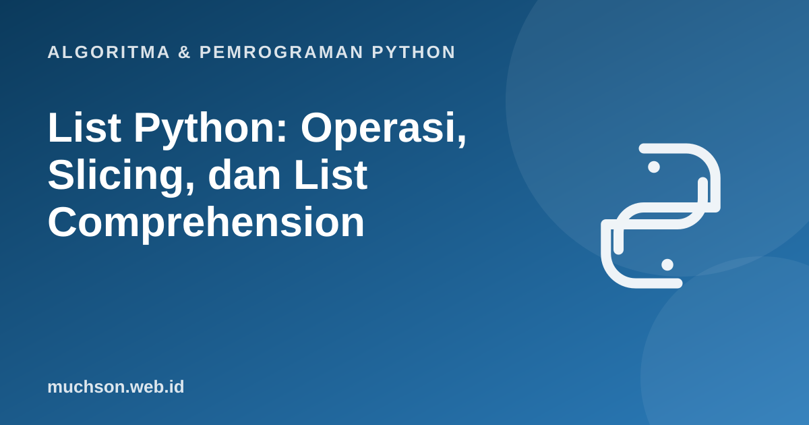

Beranda › Artikel › Algoritma & Pemrograman Python
Algoritma & Pemrograman PythonList Python: Operasi, Slicing, dan List Comprehension
List adalah struktur data paling serbaguna di Python: urutan elemen yang dapat berubah dan boleh berisi tipe apa saja. Hampir setiap program nyata memakainya. Memahami list berarti memahami operasi umumnya, biaya masing-masing, dan beberapa jebakan yang menimpa hampir setiap pemula.
Sebaiknya sudah paham: variabel dan mutabilitas, perulangan for

Tujuan belajar
Setelah membaca dan mencoba materi ini, Anda mampu:
- membuat dan memodifikasi list dengan operasi umum
- memakai indexing, slicing, dan perulangan pada list
- menjelaskan perbedaan salinan dangkal dan dalam serta jebakan list 2D
- menulis list comprehension
- mengurutkan list dengan sorted dan key, serta memperkirakan kompleksitas operasinya
Dasar-dasar list
nilai = [88, 72, 95, 64]
print(nilai[0], nilai[-1], nilai[1:3], len(nilai))
nilai.append(80) # tambah di akhir
nilai.insert(1, 100) # sisipkan di indeks 1
nilai.remove(64) # hapus kemunculan pertama dari nilai 64
akhir = nilai.pop() # ambil dan hapus elemen terakhir
print(nilai, akhir)
print(sorted(nilai), nilai.index(95), nilai.count(72))
print(sum(nilai), min(nilai), max(nilai))88 64 [72, 95] 4
[88, 100, 72, 95] 80
[72, 88, 95, 100] 3 1
355 72 100
| Operasi | Fungsi | Kompleksitas |
|---|---|---|
| lst[i] | Akses berdasarkan indeks | O(1) |
| lst.append(x) | Tambah di akhir | O(1) amortisasi |
| lst.pop() | Hapus di akhir | O(1) |
| lst.insert(0, x) | Sisip di awal | O(n): semua elemen bergeser |
| lst.pop(0) | Hapus di awal | O(n) |
| x in lst | Cari elemen | O(n) |
| lst.sort() | Urutkan di tempat | O(n log n) |
| lst + lain | Gabung membuat list baru | O(n + m) |
Pilih struktur yang tepat
Untuk antrean (pengambilan dari depan), jangan pakai pop(0) pada list besar. Gunakan collections.deque yang menghapus dari depan dalam O(1).
Salinan: dangkal, dalam, atau sama sekali tidak
Salinan dangkal belum cukup untuk list bersarang
import copy
asli = [[1, 2], [3, 4]]
dangkal = asli.copy()
dalam = copy.deepcopy(asli)
asli[0].append(99)
print(dangkal) # ikut berubah: elemen dalamnya sama
print(dalam) # tidak berubah[[1, 2, 99], [3, 4]]
[[1, 2], [3, 4]]
Jebakan klasik: list 2D
salah = [[0] * 3] * 3 # tiga referensi ke SATU list yang sama
salah[0][0] = 1
print(salah)
benar = [[0] * 3 for _ in range(3)] # tiga list terpisah
benar[0][0] = 1
print(benar)[[1, 0, 0], [1, 0, 0], [1, 0, 0]]
[[1, 0, 0], [0, 0, 0], [0, 0, 0]]
List comprehension
Cara ringkas membangun list baru dari urutan lain, dengan filter opsional. Bentuk umumnya: [ekspresi for x in urutan if kondisi].
kuadrat = [x * x for x in range(1, 6)]
genap = [x for x in range(10) if x % 2 == 0]
nama = ["ani", "budi", "citra"]
kapital = [n.capitalize() for n in nama]
pasangan = [(i, j) for i in range(2) for j in range(2)]
print(kuadrat, genap, kapital, pasangan, sep="\n")
# setara dengan perulangan biasa:
hasil = []
for x in range(1, 6):
hasil.append(x * x)
print(hasil == kuadrat)[1, 4, 9, 16, 25]
[0, 2, 4, 6, 8]
['Ani', 'Budi', 'Citra']
[(0, 0), (0, 1), (1, 0), (1, 1)]
True
Mengurutkan dengan sorted dan key
siswa = [("Ani", 88), ("Budi", 72), ("Citra", 95)]
print(sorted(siswa, key=lambda s: s[1])) # menurut nilai
print(sorted(siswa, key=lambda s: s[1], reverse=True)) # menurun
kata = ["pisang", "apel", "kiwi", "jeruk"]
print(sorted(kata, key=len)) # menurut panjang
print(kata) # sorted tidak mengubah aslinya[('Budi', 72), ('Ani', 88), ('Citra', 95)]
[('Citra', 95), ('Ani', 88), ('Budi', 72)]
['apel', 'kiwi', 'jeruk', 'pisang']
['pisang', 'apel', 'kiwi', 'jeruk']
Latihan mandiri3. Mengapa
Coba kerjakan dulu sebelum membuka jawaban.
1. Buat list kuadrat bilangan ganjil dari 1 sampai 15 dengan satu comprehension.
[x * x for x in range(1, 16, 2)] menghasilkan [1, 9, 25, 49, 81, 121, 169, 225].2. Hapus duplikat dari list sambil mempertahankan urutan kemunculan pertama.
hasil = []
for x in data:
if x not in hasil:
hasil.append(x). Cara cepat: list(dict.fromkeys(data)).3. Mengapa nilai = nilai.sort() berbahaya?
sort() mengubah list di tempat dan mengembalikan None, sehingga nilai menjadi None dan datanya hilang dari variabel itu.
4. Putar list ke kanan sebanyak k posisi: [1,2,3,4,5] dengan k = 2 menjadi [4,5,1,2,3].
k %= len(lst); lst[-k:] + lst[:-k] (bila k tidak 0).Ringkasan
- List: urutan mutable, akses indeks O(1), sisip atau hapus di awal O(n).
- Penugasan tidak menyalin; pakai copy atau deepcopy sesuai kebutuhan.
- Buat list 2D dengan comprehension, bukan perkalian.
- sorted() membuat list baru, sort() mengubah di tempat; keduanya mendukung key.
Tanya jawab
Apa bedanya list dan array?
List Python dapat memuat tipe campuran dan ukurannya dinamis. Modul array atau NumPy menyimpan tipe seragam secara padat dan lebih efisien untuk komputasi numerik.
Mengapa append dikatakan O(1) amortisasi?
Sesekali list harus mengalokasikan ruang lebih besar dan menyalin isinya (O(n)), tetapi biayanya tersebar sehingga rata-rata per append tetap konstan.
Kapan memakai tuple, bukan list?
Bila datanya tetap dan tidak akan diubah, misalnya koordinat. Tuple lebih ringan dan bisa dipakai sebagai kunci kamus.
Referensi
- Dokumentasi Python: Lists (tutorial, termasuk list comprehension)
- Dokumentasi Python: Sorting Techniques (HOWTO)
- Python Wiki: TimeComplexity (kompleksitas operasi tipe bawaan)
- Dokumentasi Python: copy, shallow and deep copy operations
- Allen B. Downey, Think Python (edisi ke-3), buku teks terbuka